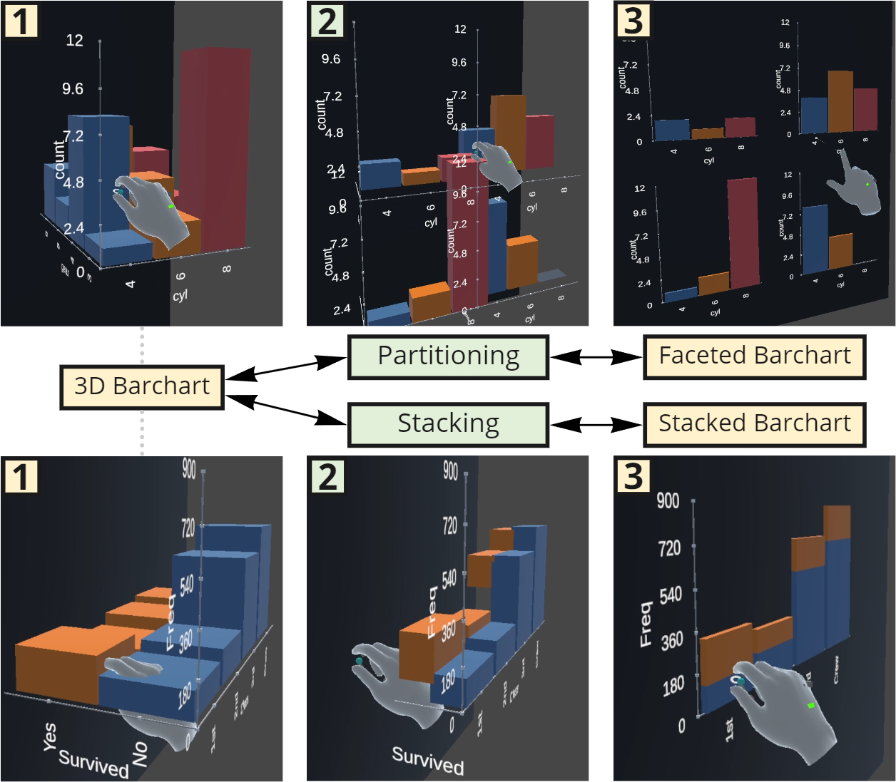

Deimos: A Grammar of Dynamic Embodied Immersive Visualisation Morphs and Transitions

Venue. CHI (2023) Full Paper
Authors. Benjamin Lee, Arvind Satyanarayan, Maxime Cordeil, Arnaud Prouzeau, Bernhard Jenny, Tim Dwyer
Abstract. We present Deimos, a grammar for specifying dynamic embodied immersive visualisation morphs and transitions. A morph is a collection of animated transitions that are dynamically applied to immersive visualisations at runtime and is conceptually modelled as a state machine. It is comprised of state, transition, and signal specifications. States in a morph are used to generate animation keyframes, with transitions connecting two states together. A transition is controlled by signals, which are composable data streams that can be used to enable embodied interaction techniques. Morphs allow immersive representations of data to transform and change shape through user interaction, facilitating the embodied cognition process. We demonstrate the expressivity of Deimos in an example gallery and evaluate its usability in an expert user study of six immersive analytics researchers. Participants found the grammar to be powerful and expressive, and showed interest in drawing upon Deimos’ concepts and ideas in their own research.